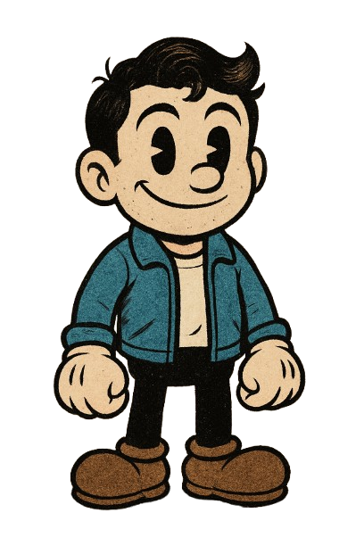

La case study UX/UI di 3B CRAFT si concentra sulla ridefinizione dell’esperienza digitale per un’azienda italiana di imbarcazioni da pesca sportiva. L’obiettivo è trasformare il sito obsoleto in una piattaforma moderna e usabile, capace di comunicare i valori del brand, migliorare l’usabilità e ottimizzare il customer journey.
Goals
Brand Identity Enhancement: modernizzare l’identità visiva per riflettere la reputazione del brand.
User Experience improvement: ristrutturare navigazione, gerarchia dei contenuti e accessibilità.
Target Audience Engagement: definire personas e journey personalizzati per appassionati, famiglie e professionisti.
Competitive Analysis & Benchmarking: allinearsi agli standard del settore e alle best practice.
Functionality Optimization: sistema di confronto modelli, design responsive, CTA chiare, moduli ottimizzati.

Results
Navigazione riprogettata e sitemap migliorata per esplorare facilmente i modelli e ingaggiare l’utente.
Confronto modelli interattivo che aiuta a valutare specifiche e prendere decisioni informate.
Accessibilità ottimizzata per un’esperienza più inclusiva e confortevole.
User testing che ha confermato maggiore soddisfazione, semplicità d’uso e un percorso più lineare.